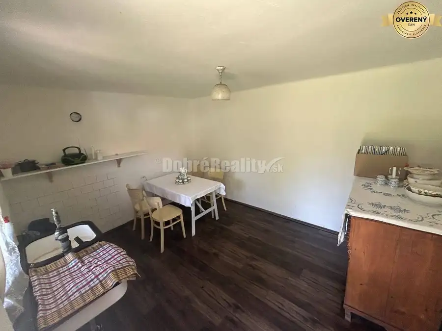
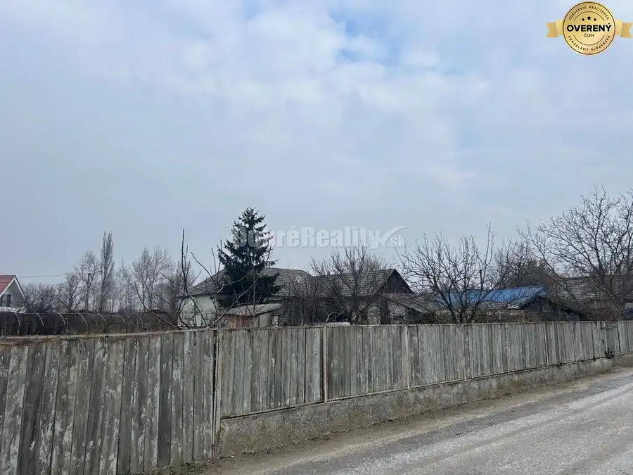
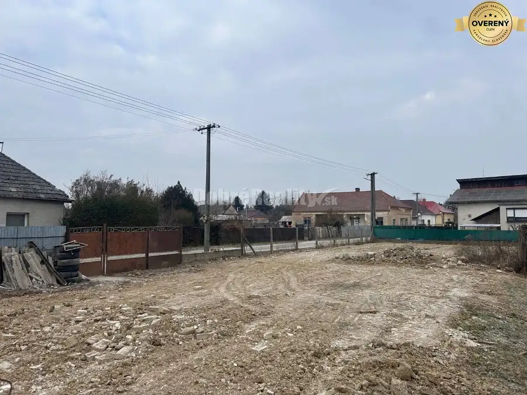

Svetlý 3-izbový byt s novou kuchyňou, klímou a panoramatickým výhľadom
Šaľa
- Dispozícia3-izbový
- Plocha76.57 m²
- Poschodie7. z 7
- Stavpo rekonštrukcii
O nehnuteľnosti
Ponúkame Vám na predaj priestranný, svetlý a výborne dispozične riešený 3-izbový byt s celkovou výmerou 76,57 m², situovaný na najvyššom 7. poschodí (7/7) vo vyhľadávanej lokalite v Šali.
Hľadáte domov, do ktorého sa môžete okamžite nasťahovať bez nutnosti ďalších veľkých investícií? Tento byt prešiel postupnou a veľmi vkusnou rekonštrukciou zameranou na kvalitu a komfort.
DISPOZÍCIA A VYBAVENIE BYTU
Byt ponúka premyslené rozloženie miestností, ktoré zaručuje dostatok súkromia pre celú rodinu:
Vstupná chodba: vybavená vešiakovou stenou a šatníkom, kvalitnými bezpečnostnými vchodovými dverami, ktoré sa postarajú o Vašu bezpečnosť.
Obývacia izba: Priestranná a presvetlená denná časť bytu.
Kuchyňa s jedálenským kútom: Srdce domova tvorí čerstvo zrekonštruovaná kuchyňa (jar 2026) s novou vinylovou podlahou a špajzou.
Spálňa & Detská izba: Izby s plávajúcimi podlahami, ideálne pre odpočinok aj detské hry.
Kúpeľňa & WC: Murované jadro kompletne rekonštruované v roku 2022, WC je samostatné s odolnou vinylovou podlahou.
Úložný priestor: K bytu prislúcha komora priamo v byte, na spoločnej chodbe pred bytom a ďalšia pivnica v suteréne.
TECHNICKÝ STAV A BENEFITY:
- Okná, kvalitné plastové okná zn. REHAU s pravidelným servisom, vybavené vnútornými aj vonkajšími žalúziami pre dokonalú termoreguláciu.
- Interiér, štýlové a odolné interiérové dvere zn. SAPELI.
- Klimatizácia, v byte je nainštalovaná klimatizačná jednotka, ktorá vám zabezpečí príjemné prostredie aj v najhorúcejších letných dňoch.
- Podlahy, kombinácia plávajúcich podláh v izbách a moderného vinylu v kuchyni, WC a komore.
Poloha 7/7: Posledné poschodie vám garantuje maximálne súkromie, minimum hluku a krásny výhľad na okolie – už žiadni susedia nad hlavou.
LOKALITA
patrí medzi veľmi vyhľadávané lokality v Šali. V blízkom okruhu sa nachádza kompletná občianska vybavenosť – školy, škôlky, obchody, ihriská a dostatok zelene pre voľnočasové aktivity.
DOBRÉ REALITY – Sme spoľahlivá realitná spoločnosť a líder v oblasti realitných služieb.
Viac ako 15 rokov nám dôverujú tisícky klientov po celom Slovensku.
Pomôžeme Vám najvýhodnejšie predať, kúpiť alebo prenajať nehnuteľnosť.
Našim klientom garantujeme:
- osobný prístup a spoľahlivé služby,
- profesionálne spracovanie inzercie,
- bezpečný priebeh celého procesu.
Vaša nehnuteľnosť bude široko inzerovaná na najdôležitejších inzertných portáloch, vrátane
platených. U nás máte istotu prvotriedneho servisu a služieb po celom Slovensku.
Najspokojnejší REALITNÍ MAKLÉRI sú súčasťou úspešného tímu DOBRÉ REALITY. Ak chcete
spokojne a bez stresu pracovať v oblasti nehnuteľností v príjemnom firemnom prostredí, určite
spolupracujte s nami. O výhodách spolupráce s nami sa už presvedčili mnohí začínajúci aj skúsení
realitní makléri.
DOBRÉ REALITY sú členom Združenia realitných kancelárií Slovenska (ZRKS) a Realitnej únie SR.
Parametre
| Celková rozloha | 76.57 m² |
|---|---|
| Poschodie | 7/posledné poschodie |
| Počet poschodí | 7 |
| Počet izieb | 3 |
| Stav | po rekonštrukcii |
| Kúpeľňa | sprchovací kút |
| Balkón | áno |
| Pivnica | áno |
| Výťah | áno |
| Parkovanie | verejné |
| Postavené z | panel |
| Zariadenie | zariadený |
| Zateplený objekt | áno |
| Klimatizácia | áno |
| Energetický certifikát | nie |
| Okná | plastové |
| Dátum zverejnenia | 8. 9. 2026 |
Kde to je
Mohlo by Vás zaujímať

Pozemok10 29 900 €Exkluzívne, pozemok pri Váhu s malou chalúpkou, murovanou pecou a pivn Neded 550 m² Nenechajte si ujsť príležitosť stať sa majiteľom tohto výnimočného pozemku, ktorý poskytuje ideálne podmienky pre štýlové bývanie. Nájdete tu pokoj v…
Pozemok2 39 000 €Priestranný a slnečný pozemok na predaj! Neded 849 m² Ponúkame Vám na predaj vyčistený a upravený pozemok vhodný ihneď na výstavbu RD, v obci Neded. Pozemok je slnečný o veľkosti 849 m2, nachádza v…
Pozemok2 28 000 €Krásny slnečný pozemok v centre dediny na predaj! Neded 556 m² Ponúkame Vám na predaj vyčistený a upravený pozemok vhodný ihneď na výstavbu RD, v obci Neded. Pozemok je slnečný o veľkosti 556m2, nachádza v…